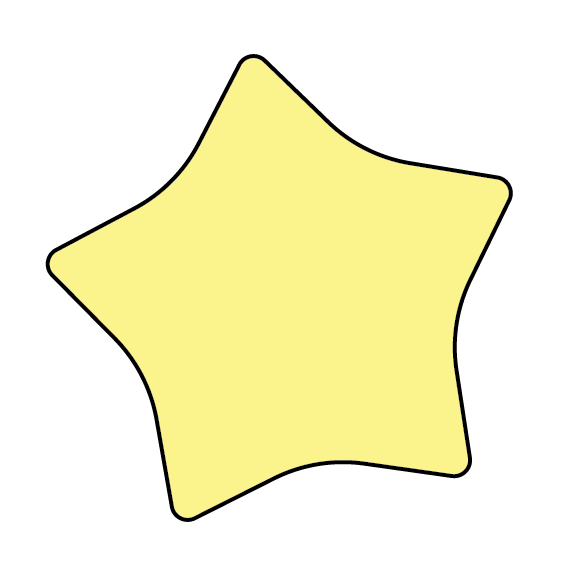
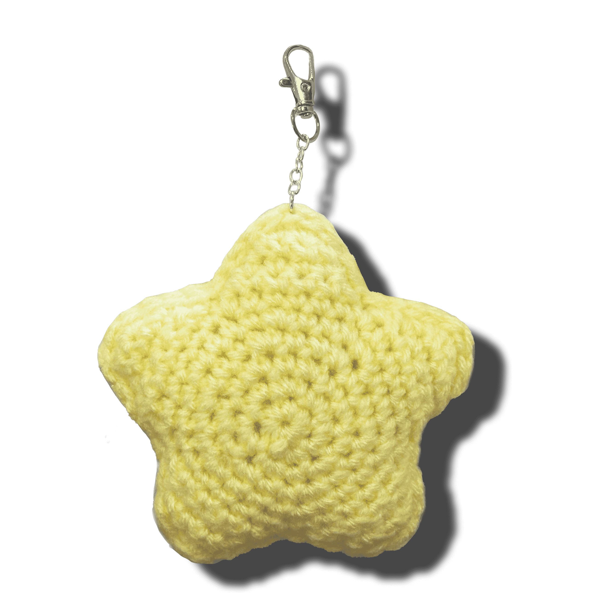

<<!DOCTYPE html>
<html lang="en">
<head>
    <link rel="preconnect" href="https://fonts.googleapis.com">
    <link rel="preconnect" href="https://fonts.gstatic.com" crossorigin>
    <link href="https://fonts.googleapis.com/css2?family=Comfortaa:wght@300..700&display=swap" rel="stylesheet">
    <style>
        @font-face {
        font-family: 'Joanna';
        src: url('../Joanna-Regular.ttf') format('truetype');
        font-weight: normal;
        font-style: normal;
        }

        body {
            background-image: url('linedpaper.jpeg'); 
            background-repeat: no-repeat; 
            background-size: cover; 
            background-position: top center;
            font-family: 'Times New Roman', Times, serif;
            margin: 0;
            padding: 0;
            display: flex;
            flex-direction: column;
            justify-content: center;
            align-items: center;
            text-align: center; 
        }

        h1 {
            font-size: 6em;
            font-family: 'Joanna', sans-serif;
            margin: 20px;
            color: #7B5B3A;
            position: relative;
            z-index: 1;
        }

        h2 {
            font-size: 20px;
            font-family: "Comfortaa", sans-serif;
        }

        .back-button {
            display: inline-block;
            margin: 20px 0;
            padding: 10px 20px;
            background-color: #C2A384;
            color: #ffffff;
            border: none;
            border-radius: 5px;
            text-decoration: none;
            font-size: 1.2em;
            cursor: pointer;
        }

        .back-button:hover {
            background-color: rgb(76, 51, 29);
        }

        h3 {
            font-size: 3em;
            margin: 20px 0;
        }

        p {
            margin: 15px 0;
            color: #7B5B3A;
        }

        /* Sharp 45-degree rotation, toggling between two frames */
        .small-icon {
            position: absolute;
            transform: rotate(0deg);
            animation: rotate-toggle 2s infinite steps(2);
            z-index: 0;
        }

        @keyframes rotate-toggle {
            0% { transform: rotate(0deg); }
            50% { transform: rotate(45deg); }
            100% { transform: rotate(0deg); }
        }

        /* Increase size of stars and adjust positions */
        .icon-small {
            width: 60px;
            top: 70px;
            left: 5%;
        }

        .icon-medium {
            width: 80px;
            top: 120px;
            right: 10%;
        }

        .icon-large {
            width: 100px;
            top: 220px; /* Adjusted value to bring it further down */
            left: 30%;
        }

        /* Yellow star smooth jiggle animation */
        .jiggle {
            max-width: 40%; 
            height: auto; 
            margin-top: 20px;
            animation: slow-jiggle 1s infinite ease-in-out;
        }

        @keyframes slow-jiggle {
            0%, 100% { transform: rotate(0deg); }
            25% { transform: rotate(3deg); }
            50% { transform: rotate(-3deg); }
            75% { transform: rotate(3deg); }
        }
    </style>
</head>
<body>
    <h1>crochet star keychain</h1>

    <!-- Back button -->
    <a href="../index.html" class="back-button">Back to My Portfolio</a>

    <!-- Larger stars with more space from the top and sharp rotation -->
    
    
    

    <div>
        <h2>I will teach you how to make a keychain out of any crochet amigurumi pieces that you may have</h2>

        <!-- Yellow star with smooth jiggle -->
        <a href="materials.html" target="_blank">
            
        </a>
    </div>

</body>
</html>
